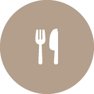

<ons-page ng-controller="TopController" ng-cloak>

    <ons-toolbar>
		<div class="center">ユーメニュー</div>

		<!-- Menu -->
		<div class="right">
			<ons-toolbar-button ng-click="navi.pushPage('menu.html', {animation: 'left'})">
				<ons-icon icon="ion-navicon"></ons-icon>
			</ons-toolbar-button>
		</div>
	</ons-toolbar>

	<div class="padding_normal">
		<div ng-repeat="category in categories"
			class="category_list_item"
			ng-click="pushCategoryPage(category)"
			>
			<div>
				
				<span ng-bind="category.name"></span>
			</div>
		</div>

		<!-- 全て -->
		<div
			class="category_list_item"
			ng-click="pushCategoryPage({id: 'all', name:'すべて'})"
			>
			<div>
				
				<span>すべて</span>
			</div>
		</div>
	</div>

	<!-- 新着 -->
	<div class="padding_normal new_arrival">
		<h2>新着</h2>

	<ons-list>
		<ons-list-item ng-repeat="new_arrival in new_arrivals"
			class="list__item__line-height"
			style="pagging:0; margin:0;width: 100%;"
			modifier="tappable"
			ng-click="pushItemPage(new_arrival)"
			>
			<ons-icon icon="ion-android-arrow-dropright-circle"></ons-icon>&nbsp;
			<span ng-bind="new_arrival.name"></span>
		</ons-list-item>
	</ons-list>

</ons-page>
